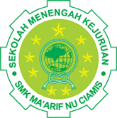

<!DOCTYPE html>
<html lang="en">
<head>
    <meta charset="UTF-8">
    <meta name="viewport" content="width=device-width, initial-scale=1.0">
    <title>Document</title>
</head>
<body>
    
</body>
</html>
<!DOCTYPE html>
<html>
<head>
    <meta charset="UTF-8">
    <meta name="viewport" content="width=device-width, initial-scale=1.0">
    <title>Latihan web</title><link rel="stylesheet" href="style.css">
    <link rel="preconnect" href="https://fonts.googleapis.com">
    <link rel="preconnect" href="https://fonts.gstatic.com" crossorigin>
    <link href="https://fonts.googleapis.com/css2?family=Poppins&display=swap" rel="stylesheet">
</head>
<body>
    <header>
<nav>
    
    <ul>
        <li>
            <a href="index.html">home</a>
        </li>
        <li>
            <a href="galeri.html">galeri</a>
        </li>
        <li>
            <a href="tentangsaya.html">tentang saya</a>
        </li>

    </ul>
</nav>
</header>
<main>
    <h1>Tentang Penulis</h1>
    <p>Novitasari Syahwalani atau akrab dipanggil Novi ini merupakan penulis dari website ini. Dia baru belajar tentang
        HTML/coding saat dia duduk di bangku kelas XII-12 Multiemdia.

        </p>
</main> 
<footer>
    <p>&copy; 2024 dibuat oleh novi.</p>
</footer>
</body>
</html>